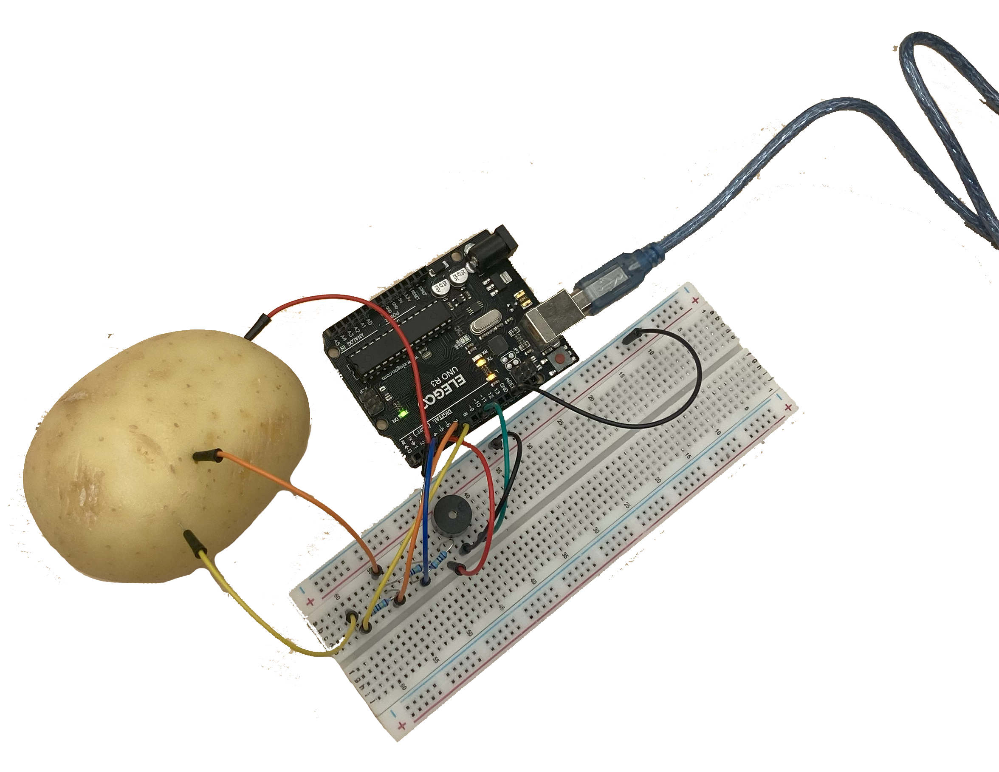
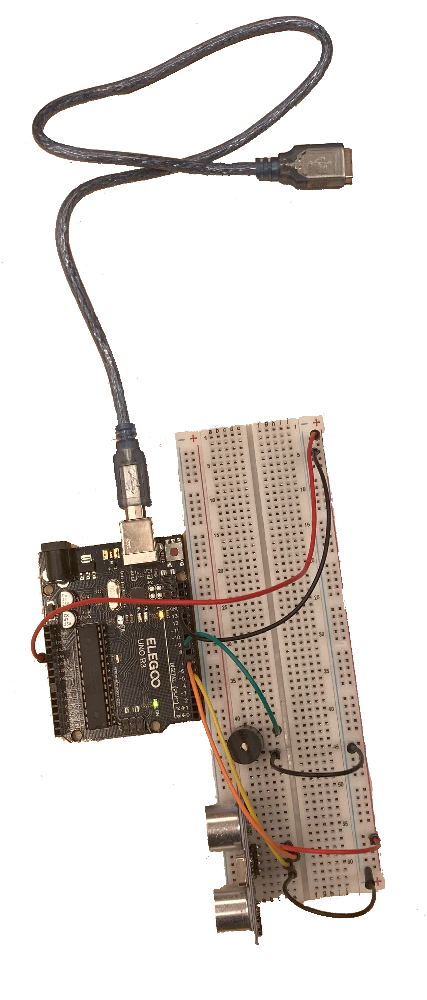
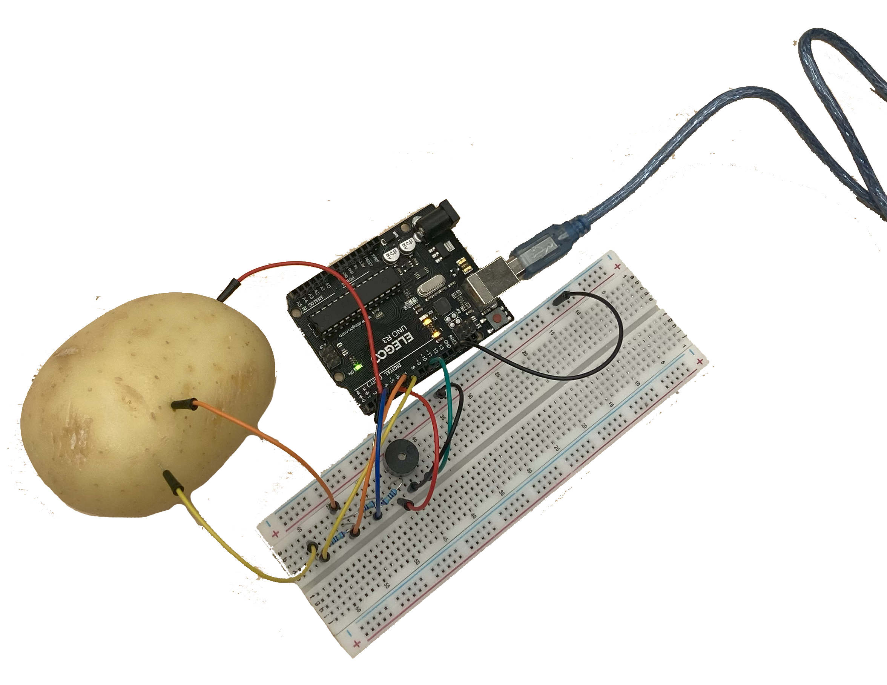
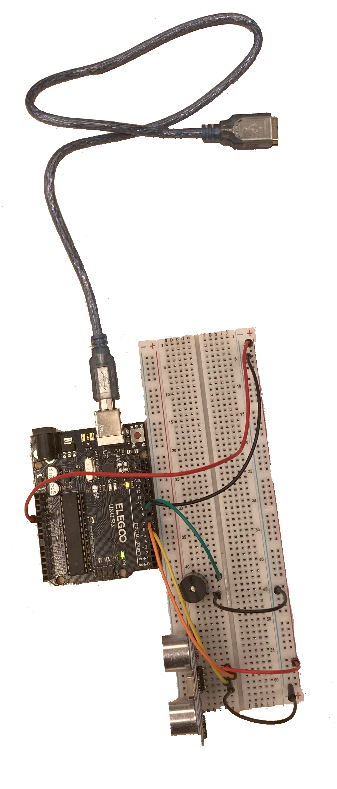
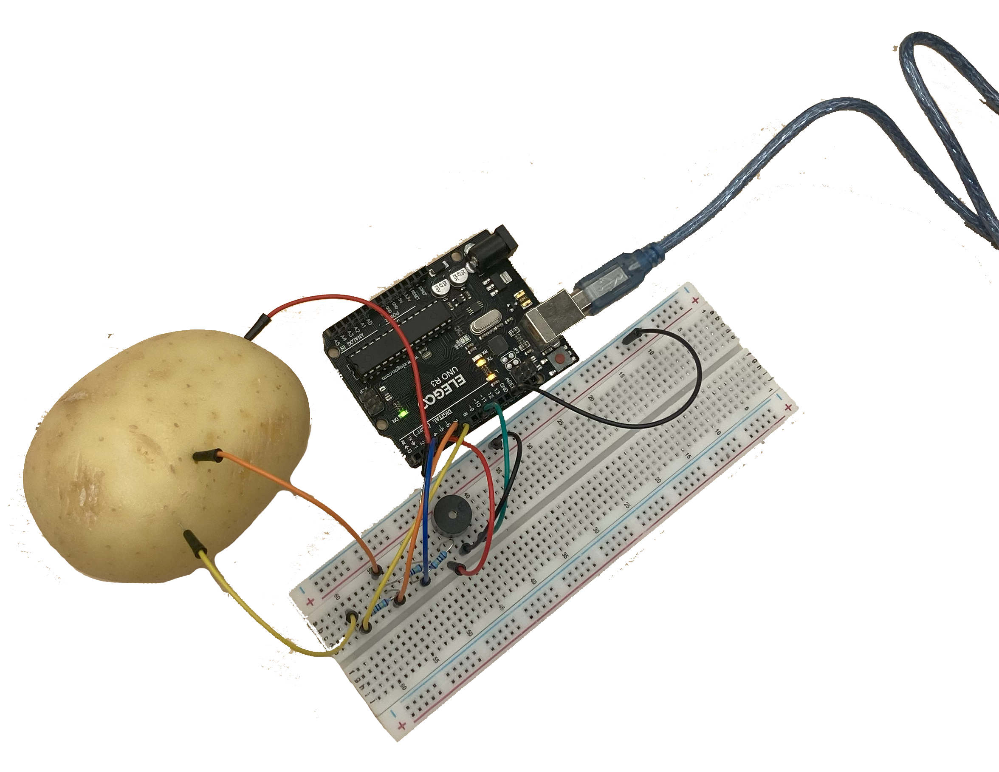
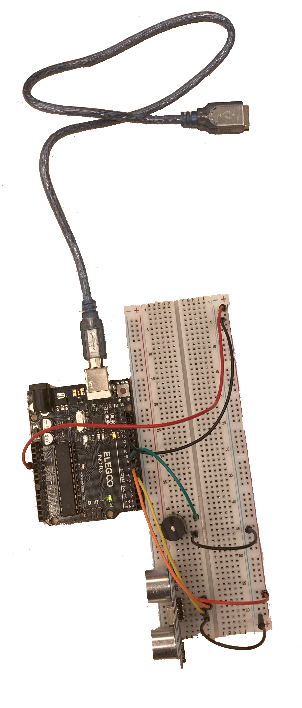

workshop
SPECULATIVE
OBJECTS:
Motion sensor and micro servo,
Potato and changing sound,
Distance sensor with changing sound.
(tip: hover your mouse on and off the
gif like motion we did with the motion
sensor)
 
 


